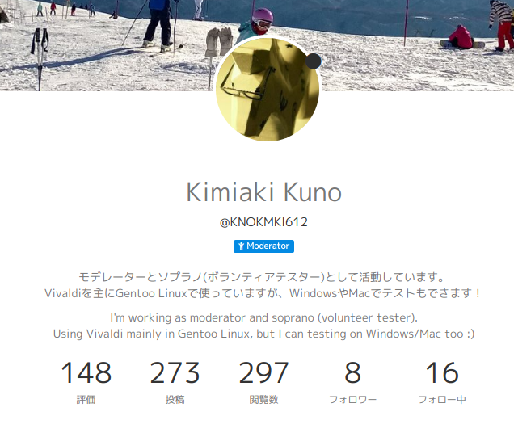
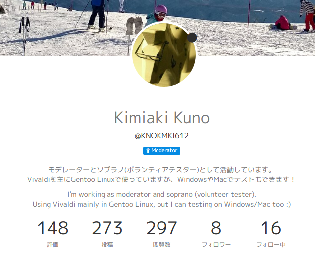
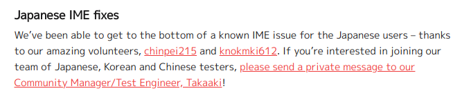
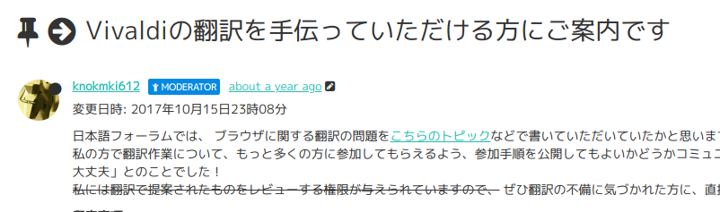
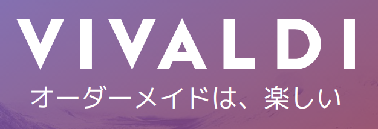
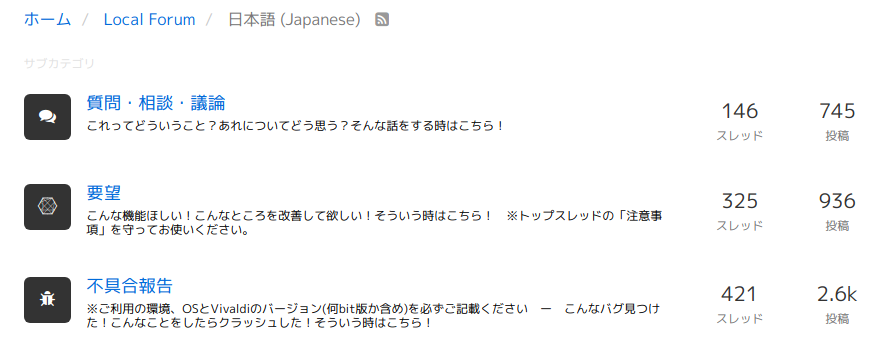
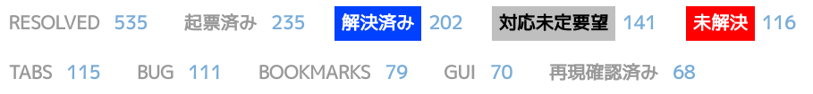
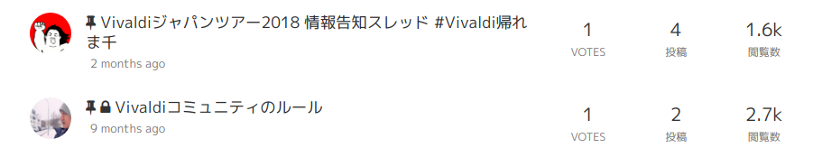

Vivaldiと私の1.5年間
(2016年12月〜2018年5月)
knokmki612
 knokmki612『vivaldiと私の1.5年間』はクリエイティブ・コモンズ 表示 4.0 国際 ライセンスで提供されています。
knokmki612『vivaldiと私の1.5年間』はクリエイティブ・コモンズ 表示 4.0 国際 ライセンスで提供されています。

くのきみ
- Vivaldiでボランティア活動をしている
- (一応)ソプラノ(テスター)
- (一応)翻訳者
- (一応)フォーラムモデレーター
最近あまり活動できていない
(2016年12月〜2018年5月)
knokmki612
knokmki612『vivaldiと私の1.5年間』はクリエイティブ・コモンズ 表示 4.0 国際 ライセンスで提供されています。

最近あまり活動できていない
(〜2017年5月)

2016年12月からバグレポートしたり
ソプラノやチームとやりとりしたり
なかなかバグの深刻さが伝わらない！！！
(2017年2月〜)
今日は直接感謝の意を伝えられる貴重な日ですね
テッちゃん 「Lets fix them all.  」
」
(2017年9月〜2018年3月)
大変ありがたい
日本のVivaldianのフィードバックがVivaldiチームに反映されるようになった！
違和感のある翻訳がだいぶ減った
(2017年1月〜)

十数人くらい応募してくれた
(2017年4月〜8月)
翻訳者で話し合って統一
(2017年4月〜11月)
もんどさん
「Mozilla JapanにL10Nガイドラインあるよ」
それをベースにガイドライン作成
英数字と日本語の間には半角空白を入れない！
(2017年4月〜)
(2017年11月)

(2018年3月〜)
(2017年1月〜)

スレッドが内容で仕分けられるようになった
(2017年4月〜)

(2017年8月〜)

(2017年8月〜)
こんな人におすすめ
こんな人におすすめ
こんな人におすすめ
Vivaldi愛に溢れたみなさん！